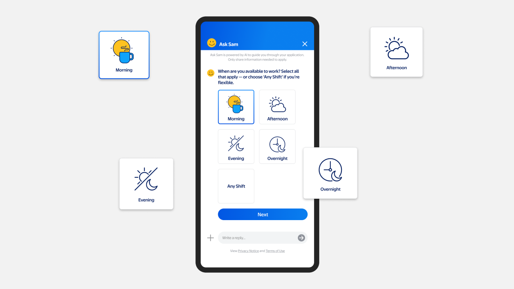
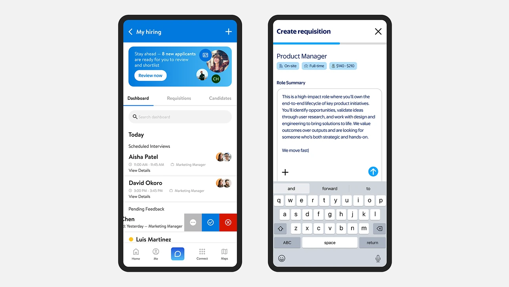
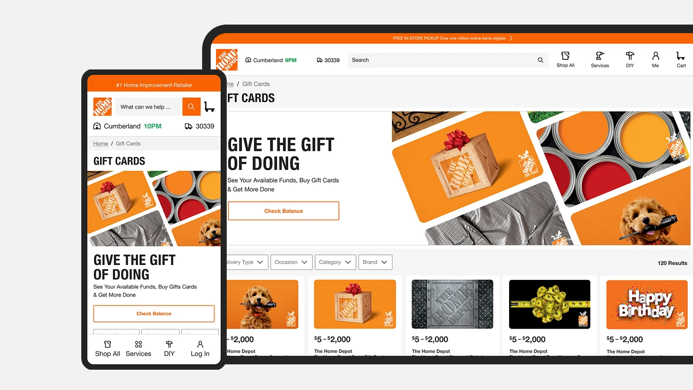

Scaling Brands at the Enterprise Level
I connect AI, product, design, and business to turn complex systems into clear experiences people can trust — and organizations can scale.
Ask the work.
Explore my leadership approach through answers grounded in the case studies—not a generic profile summary.
Read-only · Published sources only · No conversation history stored

From a viral critique to a full redesign
A conceptual redesign of Lovesac's existing site, using its lifestyle photography to create an elevated experience while bringing value, transparency, and customer expectations to the forefront.

Transforming hiring with GenAI
A conversational candidate experience designed end-to-end in 24 hours. The concept earned leadership support and positioned me as Creative Director for the initiative — shaping one human-centered journey across application, scheduling, offer, and onboarding.

Building confidence in hiring
A 0→1 hiring dashboard within Me@Campus, designed to help corporate hiring managers track open roles, see candidate progress, and act on the next step — bringing clarity to a fragmented hiring workflow.

Simplifying gifting, from discovery to checkout
The Home Depot’s gift card experience, redesigned — from card selection and check balance to mixed-cart checkout. I mapped the end-to-end flow, identified friction points throughout the experience, and designed a unified experience that scales across in-store and online.